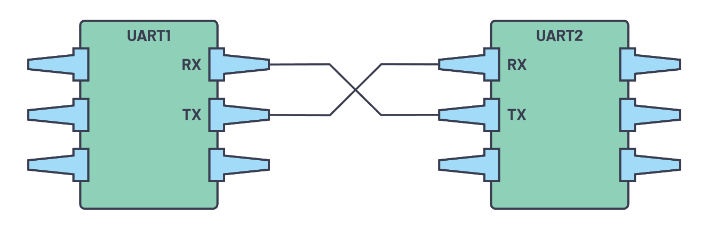
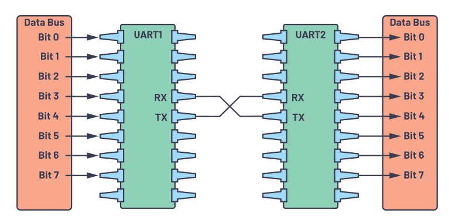

Universal Asynchronous Receiber/Tranmitter (UART)¶
UART is one of the most used device-to-decive communication protocols. When properly configured, UART can work with many different types of serial protocols that involve transmitting and receiving serial data. In serial communication, data is transferred bit by bit using a single line or wire. In two-way communication, we use two wires for successful serial data transfer. Depending on the application and system requirements, serial communications needs less circuitry and wires, which reduces the cost of implementation.
Communication protocol plays a big role in organizing communication between devices. It is designed in different ways based on system requirements, and these protocols have a specific rule agreed upon between devices to achieve successful communication.
Embedded systems, microcontrollers, and computers mostly use UART as a form of device-to-device hardware communication protocol. Among the available communication protocols, UART uses only two wires for its transmitting and receiving ends.
By definition, UART is a hardware communication protocol that uses asynchronous serial communication with configurable speed. Asynchronous means there is no clock signal to synchronize the output bits from the transmitting device going to the receiving end.
Figure 1. Two UART’s directly communicate with each other.
The two signals of each UART device are named:
Transmitter (Tx)
Receiver (Rx)
The transmitting UART is connected to a controlling data bus that sends in a parallel form. From this, the data will now be transmitted on the transmission line (wire) serially, bit by bit, to the receiving UART. This, in turn, will convert the serial data into parallel for the receiving device. This behavior is shown in Figure 2.
Figure 2. UART with data bus.
The UART lines serce as the communication medium to transmit and receive one data to another.